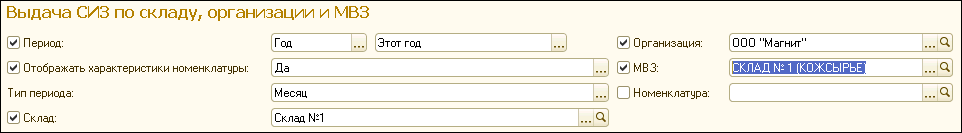

Будет сформирован отчет по выданной номенклатуре.
В отчете будут отображены:
1. Информация по номенклатуре выдачи: наименование, характеристики, код синхронизации (ORA) и цена.
2. Количество выданных СИЗ по месяцам, т.к. для параметра «Тип периода» было задано значение «Месяц».
3. Количество выданных СИЗ за выбранный период (на примере – год).
4. Стоимость указанных наименований.
Чтобы распечатать сформированный отчет, нажмите кнопку  на командной панели отчета. Сохранить отчет можно с помощью кнопки
на командной панели отчета. Сохранить отчет можно с помощью кнопки  .
.
2. Выдача СИЗ по организации
Один из вариантов отчета «Выдача СИЗ по номенклатуре выдачи». Данный отчет отображает данные по выдаче номенклатуры за установленные временные периоды с указанием организации. Полезен в тех случаях, когда в одной базе ведется учет нескольких организаций, чтобы посмотреть данные по выдаче по одной из них.
Для формирования отчета необходимо зайти в раздел «Выдача», «Панель отчетов по выдаче». В открывшемся окне выбрать отчет «Выдача СИЗ по организации».
Примечание: панель «быстрых» настроек содержит те же параметры отбора, что и отчет, описанный в предыдущей главе, с добавлением поля «Организация».
После настройки параметров отбора нажмите кнопку «Сформировать».
Отчет будет отражать те же данные, что и предыдущий, с указанием организации.
3. Выдача СИЗ по организации и МВЗ
Один из вариантов отчета «Выдача СИЗ по номенклатуре выдачи». Данный отчет отображает данные по выдаче номенклатуры за установленные временные периоды с указанием организации и МВЗ. Полезен в тех случаях, когда в одной базе ведется учет нескольких организаций, чтобы посмотреть данные по выдаче по одной из них. Для формирования отчета необходимо зайти в раздел «Выдача», «Панель отчетов по выдаче». В открывшемся окне выбрать отчет «Выдача СИЗ по организации и МВЗ».
Примечание: панель «быстрых» настроек содержит те же параметры отбора, что и отчет, описанный в предыдущей главе, с добавлением поля «МВЗ».
После настройки параметров отбора нажмите кнопку «Сформировать».
Отчет будет отражать те же данные, что и предыдущий, с указанием МВЗ.
4. Выдача СИЗ по организации и подразделению
Один из вариантов отчета «Выдача СИЗ по номенклатуре выдачи». Данный отчет отображает данные по выдаче номенклатуры за установленные временные периоды с указанием организации и подразделений.
Для формирования отчета необходимо зайти в раздел «Выдача», «Панель отчетов по выдаче». В открывшемся окне выбрать отчет «Выдача СИЗ по организации и подразделению».
После настройки параметров отбора нажмите кнопку «Сформировать».
5. Выдача СИЗ по складу
Один из вариантов отчета «Выдача СИЗ по номенклатуре выдачи». Данный отчет отображает данные по выдаче номенклатуры за установленные временные периоды с указанием склада, с которого была произведена выдача. Полезен для аналитиков отдельных складов (при наличии нескольких складов в организации).
Для формирования отчета необходимо зайти в раздел «Выдача», «Панель отчетов по выдаче». В открывшемся окне выбрать отчет «Выдача СИЗ по складу».
После настройки параметров отбора нажмите кнопку «Сформировать».
с указанием подразделений.
6. Выдача СИЗ по складу и организации
Один из вариантов отчета «Выдача СИЗ по номенклатуре выдачи». Данный отчет отображает данные по выдаче номенклатуры за установленные временные периоды с указанием склада, с которого была произведена выдача, и организации.
Для формирования отчета необходимо зайти в раздел «Выдача», «Панель отчетов по выдаче». В открывшемся окне выбрать отчет «Выдача СИЗ по складу и организации».
Примечание: панель «быстрых» настроек содержит те же параметры отбора, что и отчет, описанный в предыдущей главе, с добавлением поля «Организация».
После настройки параметров отбора нажмите кнопку «Сформировать».
7. Выдача СИЗ по складу, организации и МВЗ
Один из вариантов отчета «Выдача СИЗ по номенклатуре выдачи». Данный отчет отображает данные по выдаче номенклатуры за установленные временные периоды с указанием склада, с которого была произведена выдача, организации и МВЗ. Таким образом, по нему может быть установлено, какой отдел несет финансовую ответственность за поступившую номенклатуру.
Для формирования отчета необходимо зайти в раздел «Выдача», «Панель отчетов по выдаче». В открывшемся окне выбрать отчет «Выдача СИЗ по складу, организации и МВЗ».

После настройки параметров отбора нажмите кнопку «Сформировать».
8. Выдача СИЗ по складу, организации и подразделению
Один из вариантов отчета «Выдача СИЗ по номенклатуре выдачи». Данный отчет отображает данные по выдаче номенклатуры за установленные временные периоды с указанием склада, с которого была произведена выдача, организации и подразделения.
Для формирования отчета необходимо зайти в раздел «Выдача», «Панель отчетов по выдаче». В открывшемся окне выбрать отчет «Выдача СИЗ по складу, организации и подразделению».
После настройки параметров отбора нажмите кнопку «Сформировать».